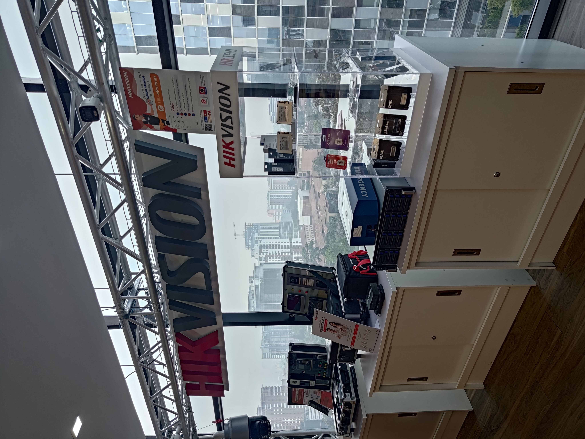
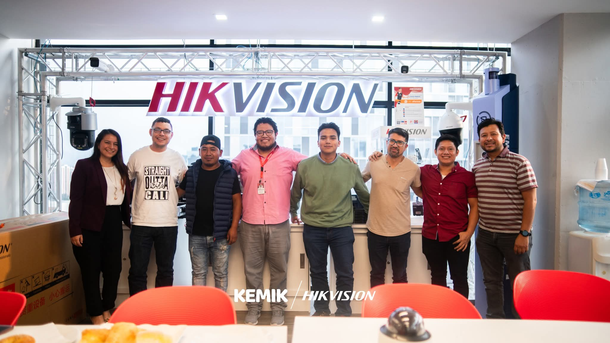
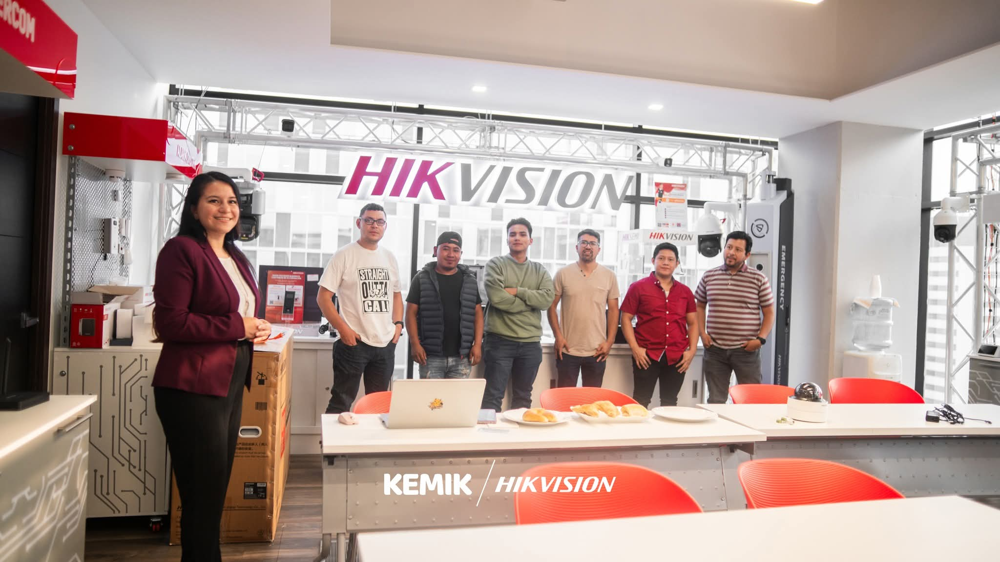
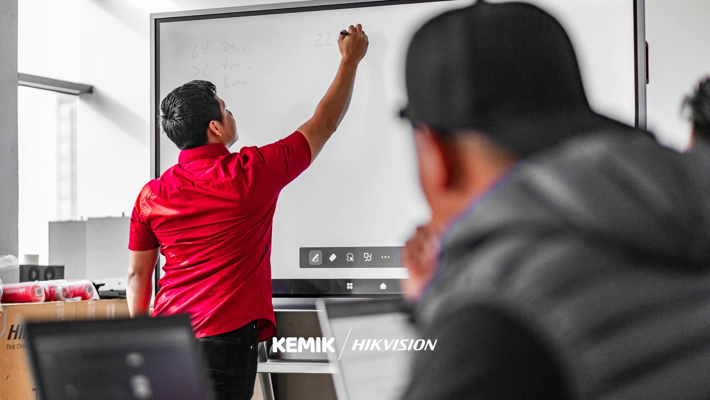

Alianza Oficial con Kemik & Hikvision
Soy parte del grupo oficial de instaladores Hikvision Guatemala y colaborador directo con Kemik. Aquí puedes ver evidencia de mi relación profesional con ambas marcas, incluyendo fotos de capacitaciones, eventos y mi certificado oficial.




Certificado oficial de instalador Hikvision